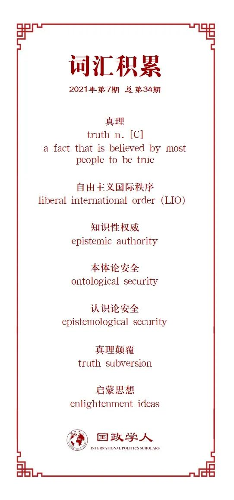

收录于合集

作品简介
【作者】 Emanuel Adler，多伦多大学名誉政治学教授、哥本哈根大学名誉教授、蒙克全球事务与公共政策学院杰出研究员、加拿大皇家学会和欧洲科学院研究员以及《国际组织》（ International Organization ）前编辑，主要研究领域为国际实践和实践共同体、国际秩序演变以及对战略逻辑的建构主义再思考。Alena Drieschova，卡迪夫大学国际关系高级讲师，主要研究物质文化和通信技术在国际政治中的作用以及民族主义和种族冲突。
【编译】 何伊楠（国政学人编译员，中国政法大学国际政治专业硕士）
【校对】 赖永祯
【审核】 陈勇
【排版】 韩柯
【美编 】游钜家
【来源】 Emanuel Adler & Alena Drieschova, The Epistemological Challenge of Truth Subversion to the Liberal International Order, International Organization 75, Spring 2021, pp.359-386.DOI: https://doi.org/10.1017/S0020818320000533
【归档】 《国际关系前沿》2021年第7期，总第34期。
期刊简介
《国际组织》（ International Organization ），简称IO，是一份经过同行评议的季刊，涵盖国际事务的领域包括：外交政策、国际关系、国际与比较政治经济学、安全政策、环境争端与解决、欧洲一体化、联盟模式与战争、谈判与冲突解决、经济发展与调整、国际资本流动等。该刊物成立于1947年，由剑桥大学出版社代表国际组织基金会出版，主编是乔治城大学的Erik Voeten。根据Journal Citation Reports显示，2019年其影响因子为5，在95种国际关系期刊中排名第2。本文收录于IO杂志的75周年特刊，该特刊以“自由主义国际秩序面临的挑战”为主题。
真理颠覆对自由主义国际秩序的认识论挑战
The Epistemological Challenge of Truth Subversion to the Liberal International Order
Emanuel Adler
Alena Drieschova
内容提要
民粹主义领导人利用颠覆真理的实践进行政治统治，这是对自由主义国际秩序（Liberal International Order, 以下简称LIO）施加压力的一个重要来源。颠覆真理的实践以摧毁自由主义真理的理想和实践为目的削弱认识论安全，将毫无根据的主张凌驾于基于事实的意见之上，从而创造出志同道合的群体。颠覆真理的实践挑战了LIO的三个关键组成部分：民主、市场和多边主义。国际关系学者已经认识到生产真理的实践是LIO的一个关键特征，但尚未将这些实践面临的挑战确定为对LIO的威胁，本文将讨论该学科可以做些什么来弥补不足。
文章导读
当代国际关系研究对社会秩序的认识论基础关注有限，未能解释国际秩序变化可能的认识论根源。本文建议将“颠覆真理的实践”（truth-subversion practices）作为一种权力形式来研究，它旨在破坏自由规范和制度，以达到政治统治的目的的。文章将“颠覆真理”（truth subversion）定义为一组特定的实践、技术和规范。非自由主义的领导人利用这些实践、技术和规范向公共领域传播信息，以侵蚀LIO的核心基础——作为理想概念的“真理”。
01
国际秩序的认识论基础
作者认为，所有的国际秩序（特别是LIO）都需要一种社会公认的真理的概念作为其基本的可能性条件，这是沟通和协调的先决条件。
1. 生产真理的实践支撑国际秩序
生产真理的实践（Practices of truth production）是确立了世界上存在什么的，具有社会意义的模式行动。它们是实践理解联系在一起的行为和话语的有组织的联系，以及人们在建立真理主张时所遵循的规则。例如，LIO包括实验和论证、统计数据分析、采访、新闻调查等科学实践；中世纪生产真理的实践关注思想的本质，依赖于通过逻辑推理来解释宗教经文。
首先，生产真理的实践对于确保国际秩序的功能非常重要。一方面，它们将物质现实转化为话语和政策建议；另一方面，生产真理的实践为社会确定公共的、集体共享的世界意识奠定了认识论基础。
其次，对知识生产的价值和目的的规范性理解包含着生产真理的实践。例如，现代科学实践建立在启蒙思想和理性至上的基础上，而中世纪的真理生产实践则以发现上帝赋予的自然秩序的规范价值为基础。
再次，真理主张的产生和传播需要特定的技术，而生产真理的实践也随着技术的发展而发展。传播技术也影响了知识性权威（epistemic authority），例如，纸张、印刷机和白话文的出现使现代早期书面文本的传播急剧增加，书籍变得便宜，教会也失去了在知识生产上的准垄断地位。
最后，在国际秩序中某些行为体会获得知识性权威，即建立真理主张的社会合法性和信任。
生产真理的实践、对知识生产的价值和目的的规范性理解、传播技术和知识性权威构成了一个紧密相关的要素网络。当这个网络瓦解时，国际秩序就会陷入危机。
2. 生产真理的实践面临的挑战引发国际秩序危机
第一，事实与颠覆真理的主张之间的差异变大，可能导致有缺陷的决策和无法治理的社会。当生产真理的实践不再服务于为治理提供合理基础的实用目的时，现实就会倒退。例如美国前总统特朗普提倡注射漂白剂，以及墨西哥总统洛佩斯·奥夫拉多尔（Andrés Manuel López Obrador）提倡用拥抱来治疗COVID-19。
第二，生产真理的替代性实践（alternative practices）可以挑战国际秩序的真理实践。如果这种挑战变得具有实质性，人们就会失去评价真理的能力，并遭受认识论上的不安全感，威胁到决定公众和集体共有的世界意识的认识论基础。例如在宗教改革时期（The Reformation），印刷术的发明使教会失去了对真理主张的垄断，人文主义者和改革家把每个人独立推理和经验观察的能力置于中心。
02
挑战自由主义国际秩序——颠覆真理的实践
LIO是1945年后出现的，它是以自由民主国家为核心成员，并由美国霸权力量支持的、西方领导的秩序，不包括中国、俄罗斯和一些伊斯兰国家等。LIO的新自由主义意识形态建立在科学和包括个人平等、独立自主和追求个人自由三个基本原则的自由主义启蒙思想基础上，并由政治自由主义、经济自由主义以及自由国际主义支持这些原则。作为一个相对和平和繁荣的秩序，LIO核心成员国建立了一个“对和平变革抱有可靠的期望”的多元安全共同体。为了维持这种秩序，LIO核心成员国的国内政治体制必须是自由民主制。
1. 自由主义国际秩序的知识性权威
启蒙运动对理性、观察和个人主义的关注促进了科学和专业知识在政治中的作用。一个由特定组织（包括大学、研究机构和大众传传媒）产生的跨国行为体群体，拥有相关的知识性权威来确立LIO主要机构所依赖的真理：民主、市场和国际组织。
2. 区分以说谎来欺骗、颠覆真理的实践和创造整体性真理以排除异议三种沟通实践
颠覆真理者主要通过国内政治运作来挑战LIO，我们可以区分三种沟通实践的方式。
（1）以说谎来欺骗（Lying to Deceive）
非自由主义领导人所采取的颠覆真理与自由民主的政治领导人采取的撒谎行为有本质区别。自由主义领导人可能会由于个人利益、追求其认为重要但不受欢迎的某些政策，或出于国家安全向公众或国际社会说谎，但他们并不颠覆真理并依赖真理的存在。如果他们被发现说谎，将失去权力，公众则会经历认识论上的不安全感。但如果相关社会中存在一种集体共享的真理规范，这种认识论不安全感可以很好地恢复。
（2）颠覆真理的实践（Truth-subversion practices）
颠覆真理的实践者往往为了权力和统治而试图废除真理。他们并不在乎是否被发现说谎，其权力随着他们获得的关注和他们对公众情绪的影响增加。颠覆真理的实践与专制的、甚至是法西斯主义的沟通实践中最突出的相似之处，是其对情感而非理性的依赖。极端右翼的政治运动和新闻媒体一贯使用颠覆真理的实践，它们传播的信息往往带有种族主义和民族主义的色彩，对传统精英怀有不信任，并试图直接与他们对其承诺回归理想化的过去的人民对话。
（3）创造整体性真理以排除异议（Creating a totalizing truth to prohibit dissent）
颠覆真理的实践与极权主义政权最显著的区别在于极权主义政权的宣传机器非常一致，不允许出现矛盾或异议。其目的是通过审查任何可能的异议，创造一个僵化的、内部一致的世界观，从而全面控制公众舆论。但作者认为这种目标难以实现，因为这样的实践者不仅在民主国家中没有权力限制言论自由（或者至少在混合政权中，不可能完全排除异议），而且互联网和社交媒体平台也使得言论难以被垄断。相反地，颠覆真理的实践者旨在制造混乱。
3. 颠覆真理的实践的分类
作者主要基于2016年之后的实例说明颠覆真理的实践对LIO的挑战，并允许其他人评估该分析框架是否适用于其他时间段和地理环境。
（1）虚假言论（false speak）
虚假言论是以一种很易证实的方式直接有目的地说谎，一个突出的例子是英国公投脱欧运动宣称土耳其将很快成为欧盟成员国。
（2）双重言论（double speak）
双重言论是在自己的话语中内部矛盾，这挑战了启蒙运动的真理理想所依赖的理性演讲。例如，特朗普在一次新闻发布会上声称将暂停向世卫组织提供资金。此后不久，当一名记者再次问起时，他回答说：“我不是说我会这样做。但我们会考虑的”。
（3）煽动性言论（inflammatory speak）
煽动性言论试图激怒民众，它用被认为不适合用于主流政治交流的词汇攻击对手。例如特朗普将媒体攻击为“人民的敌人”；德国极右翼政党选择党（AfD）的主要政治人物在一场地区选举辩论中把一名气候活动人士称为“扎着辫子的圆脸女孩”。
（4）宣扬“另类事实”（promoting alternative facts）
这种实践需要对启蒙思想的真理概念和基于这一概念的关键机构的知识性权威进行直接的口头攻击，比如英国司法大臣迈克尔·戈夫（Michael Gove）声称“这个国家的人民已经受够了专家”。
（5）信息泛滥（flooding）
互联网时代的非自由主义政权经常通过网络传播多种信息，使真理对民众而言模糊不清。例如特朗普自上任以来，平均每天发布7.5条虚假声明，2018年6月和7月平均每天发布16条虚假声明。在巴西，90%的受访者在WhatsApp上接触过关于流感大流行的假新闻，70%的受访者相信这些信息。
（6）不合时宜的信心（misplaced faith）
指的是忽视前方仍存在的挑战的复杂性，对未来的成功盲目自信的陈述。例如，在COVID-19疫情早期，雅伊尔·博尔索纳罗（Jair Bolsonaro）声称巴西不会受到严重影响，因为巴西人“从未感染任何疾病”。
（7）阴谋论（conspiracy theories）
非自由主义领导人散布阴谋论，以寻求不和谐、社会两极分化和蔑视真理。例如，欧尔班（Victor Orban）声称乔治·索罗斯（George Soros）想接管匈牙利。
上述颠覆真理的实践并不相互排斥，也不受时间和空间限制。此外，虽然其中一些话语策略在历史上曾单独用于LIO，以实现特定目标，但它们并没有与破坏LIO真理架构的明确目标相结合，而只是在边缘地带使用。
4. 颠覆真理的实践的传播
互联网的本质意味着无论自由主义还是威权主义政权都很难建立对信息传播的绝对控制。事实上，这些政权可能也发现了，不严格控制社交媒体和言论的好处在于可以显示公众对具体政策不满的预兆。
尽管在特朗普当选和英国退欧公投之前，学者们注意到，颠覆真理的实践可能会对新兴民主国家的前景产生负面影响，但不太清楚这种实践是否会在成熟的自由民主国家产生类似的影响。只有在成熟的民主国家取得意外成功之后，颠覆真理的实践造成的危险才变得十分明显。
颠覆真理的实践在民主选举中发挥了重要作用。大选前夕民众对假新闻的参与度急剧上升，而对真实新闻的参与度则在此期间下降。在美国，特朗普的竞选活动不仅把颠覆真理的实践高度公开化，显示出了它们的成功，还提供了合法性；在欧洲，法国国民阵线（Front National）和德国选择党等极右翼政党利用互联网和社交媒体进行颠覆真理的活动，其中选择党在使用社交媒体方面比德国主流政党更先进；在巴西，社交媒体和假新闻推动极右翼候选人雅伊尔·博尔索纳罗（Jair Bolsonaro）成功赢得2018年总统选举。
尽管公众集会提供了一种有用的次要手段，但社交媒体仍然是民粹主义者颠覆真理的理想工具。社交媒体网站中，虚假新闻报道的用户参与度超过了准确新闻报道。假新闻可能比真新闻更哗众取宠，也比以准确为目的的、更细致入微的新闻更容易消化。因此，假新闻更有可能引起反应。
通过这些手段，颠覆真理的实践者已经影响很大一部分人口。根据Facebook的数据，在2016年美国大选前的几个月里，仅俄罗斯在该平台上发布的虚假信息就可能影响1.26亿用户。2016年一项民意调查显示，32%的受访者表示他们经常在网上看到假新闻，39%的人表示他们有时会看到假新闻。这些数据表明，颠覆真理是一种普遍现象。
5. 颠覆真理的实践创造认识论不安全
本体论安全（ontological security）是个人和企业（国家）自我的稳定性，认识论安全则是对认识自我所需的常识性知识的信任。
颠覆真理的实践在个人层面和社会秩序层面都产生了认识论上的不安全感：
对个人来说，认识论不安全是一种对什么是事实和真实的迷失状态。这种认识论不安全导致信任的缺乏，由此产生的迷失会导致本体论不安全，即对个人身份的感知威胁。个人在迷失同时产生一种意义建构（sense- making）的欲望。如果这种对个人观点和信仰的依赖变得非常强烈，它可以恢复本体论安全，并导致对自我意义的过度强调。
作为社会秩序的一个特征， 认识论不安全意味着没有一个社会公认的衡量标准来确定什么是正确的。 关于什么是知识和真理的分歧产生了，并挑战了关键机构的知识性权威。
在LIO中，认识论不安全表现为：（1）有效的政府和多边主义的有效运作极具挑战；（2）启蒙运动的规范和原则（理智、理性、科学、专业知识和自由国际主义的意识形态）受到威胁，被强烈的煽动情绪取代；（3）关键机构的真理主张和权威受到挑战，公众对专家越发不信任；（4）国内和国际社会两极分化，各阵营之间的理性讨论变得不可能。这些分裂也阻碍了全球的相互联系，破坏自由国际主义。
03
颠覆真理的实践对政治自由主义、经济自由主义和 自由国际主义的挑战
1. 对政治自由主义（Political Liberalism）的挑战
民粹主义者假装民主主义者，唤起人们对判断和常识的关注。但又通过使用颠覆真理的实践，阻止公众的政治知情。作者强调了一些机制和指标，并预测：如果颠覆真理的实践成为主导，民粹主义政党代表将在选举结果和民意调查中崛起，民主的总体指标和与少数群体权利、法治、新闻自由和自由公正选举相关的个人指标将随之恶化。
这样的发展将对LIO的价值观造成压力：第一，对LIO合法性的挑战将考验其合作性质，并使该秩序更具对抗性和冲突性；第二，透明度日益缺乏和国际行为体决策的多个准入点关闭将使重要的跨国特征受到损害，新的隐蔽专制政权和非自由主义的西方领导人之间出现跨国合作；第三，新的民粹主义政权如果能在主要西方国家维持，将成为公众心中可被其他国家效仿的有效治理形式。
2. 对经济自由主义（Economic Liberalism）的挑战
第一，由于市场依赖可靠的信息来有效运作，颠覆真理的实践在金融和商业市场内产生不安全感。金融市场上使用的某些算法依赖于新闻动态和社交媒体网站上的趋势。2013年，一条假新闻在推特上发布后，道琼斯指数在几分钟内下跌了143点。
第二，由于颠覆真理的实践对国内社会产生两极分化影响，认识论不安全对重建战后国际经济秩序基于的“内嵌的自由主义的”（embedded liberalism’s）原则构成挑战。在国内层面达成妥协的困难加剧了对国际行为体稳定期望的不利影响，国际合作中由此产生的压力会削弱LIO的国际经济机构和制度，并可能最终摧毁它们的社会合法性，其后果可能是经济上的次优政策。如中美贸易战会引发经济衰退，甚至使世界陷入全球萧条。
3. 对自由国际主义（Liberal Internationalism）的挑战
对自由国际主义的挑战主要是对多边主义的考验。
第一，有针对性的虚假信息运动可以在（介绍）国际合作的利弊方面欺骗公民，例如英国的脱欧公投部分原因在于一场非常成功的虚假宣传运动。
第二，认识论上的不安全导致了可预测性的缺乏，这使得国际舞台上其他领导人难以合作，并威胁到核心成员国之间的信任。如果颠覆真理的实践占据主导地位，以签署条约和加入国际组织的形式进行的国际合作预计将减少。
04
应对国际秩序的认识论挑战的国际关系研究议程
作者指出，建构主义者虽然强调了知识生产实践为秩序的维持提供的基础，但他们并没有在同样的程度上考虑基于这些实践的变化而发生秩序变化的可能性。批判理论家将科学与精英项目等同，专注于证明自由主义知识实践如何让不同的声音边缘化，但他们没有预见到可能会向一个更加专制的世界偏离。
颠覆真理的实践给LIO带来的认识论挑战让国际关系学者感到意外。作者认为，应该采取几个步骤来解决盲点：
第一，对几十年甚至几个世纪以来发生的长期历史变化进行理论分析，识别颠覆真理的实践带来的挑战。颠覆真理的实践是一种有历史背景的政治形式，这意味着国际关系学者需要进行历史的宏观比较（macro- comparative）研究。
第二，更多地关注国际、国内和地方政治的相互关联的本质。
第三，研究最近对LIO的破坏需要关注破坏民主的跨国实践和话语，以及这些实践和话语如何反过来影响国际秩序。
第四，更多地关注政治传播和媒体研究。有必要将国家和地方层面的微观发展（比如“赞”Facebook帖子）与宏观层面的国际秩序变化联系起来，还有正在出现的新技术（如物联网、人工智能和大数据分析）也有可能影响国际秩序。
第五，可能有一些政治、经济、社会、教育和沟通实践比其他实践更有效地挑战和根除颠覆真理的实践。例如，已经成为颠覆真理实践者攻击目标的科学，是否掌握着反击他们的影响的关键？从长远来看，COVID-19大流行能否增强科学？如果是这样，是否会对科学的知识性权威产生积极影响，从而对抗对其他全球威胁（如气候变化）的颠覆行为？
05
结论
在LIO的支持者和颠覆真理的实践者之间的斗争仍在继续。颠覆真理的实践走向如何首要取决于人们对它们的敏感度，这种敏感度的一个主要标志是选举结果。
LIO是一个相对和平和高效的秩序，其繁荣很大程度上是因为它在决策中对科学的依赖。在某种程度上，面对现实以及依靠科学解决COVID-19大流行等难题的需要，将最终揭穿威胁民众福祉的无效的颠覆真理的实践。尽管标榜自由主义的国家经常违反自由民主、自由贸易和多边机构所依据的原则，但（这些内涵）却深深植根于文化之中，并在以往的危机中幸存下来。作者谨慎乐观地认为，LIO有韧性，能够克服颠覆真理的实践和其他危及其持久性的威胁。
译者评述
实践作为适当绩效行动的实施（competent performances），是具有社会意义的规律行动。这些规律行动不同程度地表现行动者的适当绩效，同时包含并展现背景知识和话语，并可能物化这样的知识背景和话语。颠覆真理的实践，则是行动者旨在破坏自由规范和制度以达到政治统治目的的行动。本文作者通过说明颠覆真理的实践在个人和社会层面动摇认识论安全的逻辑，论证颠覆自由主义国际秩序真理的实践如何对自由主义国际秩序的基本原则——政治自由主义（民主和法治）、经济自由主义（自由市场）和自由国际主义（多边主义）构成威胁，动摇自由主义国际秩序中行为体的认识论安全。
本期IO杂志75年特刊以“自由主义国际秩序面临的挑战”为主题，其中多数作者主要强调公众的需求因素（经济不平等、移民、种族主义等）使公众容易受到民粹主义信息影响。本文则将论点集中在民粹主义的供给面，指出西方自由主义社会中存在于自由民主边缘的民粹主义政客及其推动者故意发展和完善了一套颠覆真理的实践制造认识论不安全，从而破坏国内和国际自由主义国际秩序。而他们的成功是由于民众对这些信息具有一定的易感性，这又源于之前强调的民粹主义的需求因素。
在本文结尾，作者谨慎乐观地认为，自由主义国际秩序对科学的依赖和自由主义原则被多次违背又多次幸存的“韧性”将会使自由主义国际秩序继续存续，并最终揭穿威胁民众福祉的、无效的颠覆真理的实践。显然，作者的自由主义国际秩序仍在以西方世界为中心的话语叙事之中。
参考文献
[1] [加拿大]伊曼纽尔·阿德勒、文森特·波略特主编：《国际实践》，秦亚青、孙吉胜、魏玲等译，上海人民出版社2015年版，第6-7页。
词汇整理

文章观点不代表本平台观点，本平台评译分享的文章均出于专业学习之用, 不以任何盈利为目的，内容主要呈现对原文的介绍，原文内容请通过各高校购买的数据库自行下载。
好好学习，天天“在看”
国政学人
支持学术公益与知识传播
微信扫一扫赞赏作者 __赞赏
已喜欢，对作者说句悄悄话
取消 __
发送给作者
发送
最多40字，当前共字
上一页 1/3 下一页
长按二维码向我转账
支持学术公益与知识传播
受苹果公司新规定影响，微信 iOS 版的赞赏功能被关闭，可通过二维码转账支持公众号。